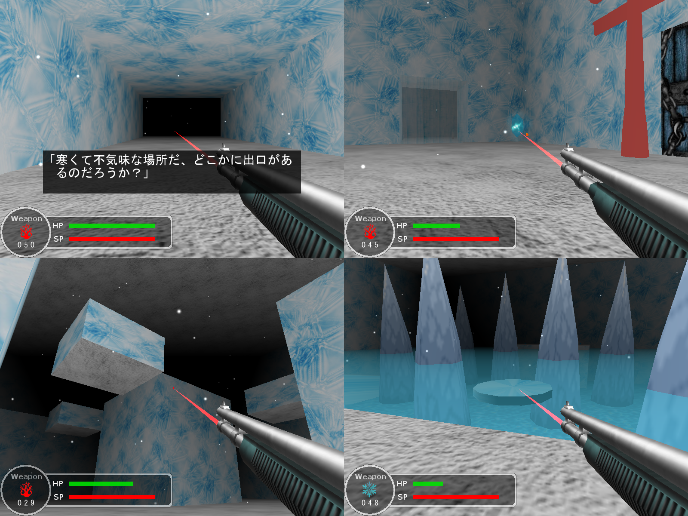

学生時代にDirectX9を使って作成したWindows向けのFPSアドベンチャーゲームになります。
氷に覆われた不気味な迷宮からの脱出を目指します。
某有名サバイバルホラーゲームに影響されてレーザーポインタを使用したゲームを作りたいと思い
当時は試行錯誤して実装しました。
ダウンロード
担当
企画・デザイン・プログラム
※制作は全て一人で行っています。
※一部の3Dモデル、テクスチャ、サウンドなどはフリー素材を使用しています。
開発環境
Microsoft Visual Studio 2008
Microsoft DirectX SDK (December 2006)
※DirectX SDK (November 2007)以降ではDirectMusicが廃止されています。
開発言語
C++
ターゲットプラットフォーム
Windows
動作確認：WindowsVista, Windows7, Windows10
デザインについて
寒い場所にいるという雰囲気を出すために、ビルボードを使用して雪を降らし
氷を中心にオブジェクトの配置し全体的に寒色を意識しました。
また暗いフォグをかけて不気味な雰囲気も作り出しています。
水に潜った時も視界を水色にしてBGMの音量を下げ、
息を吐くSEを再生して雰囲気が出るように工夫しています。
探検を進めていくと銃弾の種類が増えてギミックを解くことができるようになりますが、
こちらのアイデアも某有名ゲームのリスペクトになります。
コーディングについて
当時はゲームを形にするのに精一杯だったとはいえ、
改めて見るとなかなかお恥ずかしいソースです。
スペースの使い方はイマイチでソース跨ぎのグローバル変数も多用している。
オブジェクト指向って何それ美味しいの？？？って感じです。
同級生ではそれなりにできる人でもMainソース一本に全処理を記載するある意味猛者がいる中、
申し訳程度のソース分割で少しでも組みやすいように工夫していました。
それでも、当時は覚えたての知識でイメージを何とか形にしたい、
憧れのゲームを作りたいと全力だったのです。
何年経っても純粋な気持ちを思い出させてくれるこのソースは私の財産です。